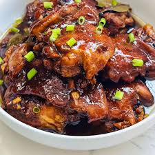

The recipe for chicken adobo
INGREDIENTS

- Salt
- 1/2 kilo chicken
- cooking
- 1 whole garlic
- 2 pc onions
- 1/2 cup white vinegar
- 1/2 cup soy sauce
- 1-2 tbsps brown sugar
- 5 pcs laurel leaves
- 1 tps whole peppercorns
- 1 tsp black pepper
- 1/2 cup water
The recipe for paksiw
INGREDIENTS
- 1/2kg. any type of fish, clean
- 1 pc Knorr fish cube
- 1-2 ginger,sliced
- 2 pc bay leaves
- 4 cloves garlic slice
- 2 pc finger chili
- 1 tsp black peppercorn, crushed
- 1 cup vinegar
- 1 & 1/4 cups water
On How To Cook Paksiw Na Bangus
Halo-Halo recipe
INGREDIENTS

- Here are some of the most common halo-halo ingredients that are used:
- crushed or shaved ice
- milk (fresh or evaporated)
- sugar, if needed
- Here are some of the most common halo-halo sago or fruits that are used:
- sweetened saba or plantain bananas
- sweetened sweet potatoes
- fresh or sweetened langka (jack fruit)
- sweetened garbanzos or beans
- coconut strips or sweetened macapuno
- sweetened red munggo
- nata de coco (coconut gel)
- sago or tapioca pearls or jelly cut into cubes
- pinipig
- Here are some of the most common topping that are used:
- ube jam or ube ice cream
- letche flan